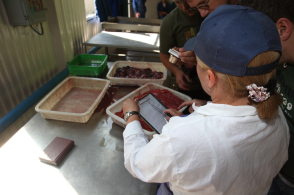
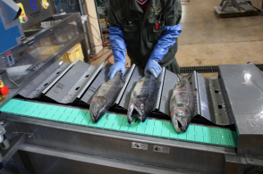
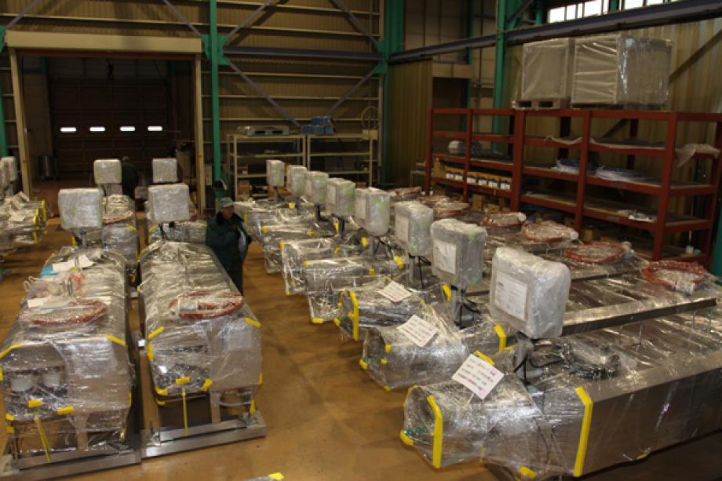

История Nikko в России
История компании Nikko насчитывает уже более 40 лет. Территориально этот завод находится в Японии, на острове Хоккайдо, в городе Кусиро. На данный момент предприятие является крупнейшим производителем оборудования для пищевой промышленности в Японии.
Завод Nikko, Япония, Хоккайдо, Кусиро
Долгие годы оборудование Nikko пользуется неизменной популярностью не только на внутреннем рынке Японии, но и в США, Канаде, Китае и в ряде европейских стран. Оборудование Nikko ценится во всем мире за высочайшее качество обработки при минимальном использовании человеческих и производственных ресурсов. Компании Nikko принадлежит ряд уникальных разработок в области технологий рыбопереработки, многие из которых защищены международными патентами.
Работа по выходу компании Nikko на российский рынок началась в 2007 году. В этот год история компании Nikko в России началась с белого листа.
2007 год
Начало
В 2007 году руководством компании Nikko было принято решение начать планомерный выход на российский рынок. Перспективность сотрудничества с российскими компаниями была очевидна, поэтому принятие этого решения стало важным стратегическим шагом.
В эти годы российская рыбопромышленная отрасль встала на путь становления и стремительного развития. В жесткой конкурентной борьбе преимущество получали компании, делающие ставку на качество, но при этом разумно распределяющие собственные ресурсы. При возросшей потребности технологического перевооружения, оборудование Nikko, традиционно отличающееся высокой производственной и экономической эффективностью, становилось наиболее привлекательным вариантом для российских предприятий.
Однако, для полноценного выхода на сложный российский рынок, компании Nikko предстояло проделать большую работу. Именно подготовительным мероприятиям, адаптации оборудования и установлению первых контактов с российскими предприятиями был посвящен весь следующий год.
2008 год
Первые шаги на российском рынке
Естественно, что для нормальной работы с российскими компаниями была необходима полноценная русскоязычная клиентская и сервисная служба. Поэтому в первую очередь в, начале 2008 года, компанией был сформирован отдел продаж и сервисного обслуживания Nikko на русском языке.
Для качественной работы на российских предприятиях оборудование Nikko требовало обязательной адаптации под условия российского производства и специфику местного сырья.
Первой площадкой для испытания оборудования Nikko в российских условиях стал Южно-Курильский рыбокомбинат. В мае 2008 года на это предприятие была поставлена первая линия непрерывной переработки лососевых NAG-501. Эта линия автоматически осуществляет отсекание голов, потрошение, бережное извлечение икорных ястыков, молок и других внутренностей, чистку и обмыв тушки.
Май 2008. Первая линия непрерывной переработки лососевых отправляется
на Южно-Курильский рыбокомбинат
на Южно-Курильский рыбокомбинат
Подготовка оборудования для работы в России
Сразу после установки оборудование прошло испытание летней путиной 2008. На протяжении всего сезона специалисты инженерной службы Nikko тесно взаимодействовали с технологами предприятия, совместно анализируя работу линии и внося необходимые изменения. Несмотря на объективную необходимость адаптации, этот сезон оборудование отработало качественно и без сбоев, за что получило самые высокие оценки от технологов и руководства Южно-Курильского рыбокомбината.
По итогам испытаний сезоном 2008 инженерной службой Nikko был внесен целый ряд конструкторских изменений в оборудование, предназначенное для поставок в Россию.
В декабре 2008 года компания Nikko впервые серьезно заявила о себе на территории России, приняв участие в отраслевой выставке РЫБПРОМЭКСПО-2008, прошедшей в Москве. Оборудование вызвало серьезный интерес среди участников выставки, что укрепило уверенность руководства компании в том, что выход на Российский рынок – стратегически правильное и перспективное решение.
В рамках выставки «РЫБПРОМЭКСПО-2008» был заключен контракт на продолжение сотрудничества с Южно-Курильским рыбокомбинатом и комплексное переоснащение предприятия оборудованием Nikko.
2008 год стал важным периодом развития компании Nikko на российском рынке. В начале года был создан отдел продаж и обслуживания на русском языке, а затем состоялась первая поставка оборудования на российское предприятие. В результате проведенных испытаний оборудование было адаптировано под российские производственные условия. В конце года компания приняла участие в крупной отраслевой выставке.
2009 год
Начались поставки оборудования Nikko на российские предприятия
В 2009 году компания Nikko продолжила работу по подготовке оборудования к российским условиям. На Южно-Курильский рыбокомбинат была поставлена вторая модернизированная линия непрерывной переработки NAG-501, а также комплексная линия для взвешивания и сортировки рыбы. Кроме того, оборудованием из Японии был полностью переоснащен икорный цех предприятия.
Летом 2009 года, в качестве площадок для испытания оборудования Nikko, к Южно-Курильскому рыбокомбинату также присоединились две сахалинские рыбопромышленные компании: ООО «Анивский Бриз» и ООО «Модуль-97». На этих предприятиях были переоборудованы цеха переработки лососевых.
Летняя путина 2009 также прошла в режиме испытаний при тесном взаимодействии инженеров Nikko c технологами трех дальневосточных предприятий. В итоге сезон 2009 оборудование Nikko отработало просто блестяще – очень положительно сказалась модернизация, проведенная в 2008 году. После того, как инженерной службой Nikko были проведены заключительные доработки и тестирование по итогам лета 2009, стало очевидным, что оборудование Nikko приспособлено и готово для эффективной работы на российских предприятиях.
«Рыбная индустрия 2009»
В сентябре 2009 года, компания Nikko приняла участие в крупной отраслевой выставке «Рыбная индустрия», которая проходила в Южно-Сахалинске. Это значимое мероприятие посетили представители множества дальневосточных рыбопромышленных компаний. Оборудование Nikko вновь вызвало неподдельный интерес у участников выставки. Рыбопромышленников впечатлили результаты работы, продемонстрированные оборудованием Nikko в 2009 году. По итогам выставки, было заключено сразу несколько контрактов на поставку оборудования в ближайшем сезоне.

Сентябрь 2009. Компания Nikko встречает первых лиц Сахалинской области
на своем выставочном павильоне
на своем выставочном павильоне
Первая открытая демонстрация оборудования Nikko в России
В ноябре 2009 года произошло очень значимое событие – на территории сахалинского предприятия ООО «Бриз» была проведена демонстрация оборудования Nikko в реальных производственных условиях и на реальном сырье. Эту демонстрацию посетило множество представителей дальневосточных рыбопромышленных компаний. Гостям мероприятия была продемонстрирована работа линии непрерывной переработки лососевых NAG-501, а также филетировочного оборудования Nikko.
Ноябрь 2009. Компания Nikko
проводит демонстрацию оборудования на Сахалине
проводит демонстрацию оборудования на Сахалине
Сильно задержанный сырец – довольное частое явление на российских предприятиях, поэтому неудивительно, что чувствительность оборудования к качеству сырца – вопрос, который интересовал большинство потенциальных клиентов компании.
Для того, чтобы доказать, что оборудование Nikko не требовательно к качеству сырья, для испытания установок был использован сырец, искусственно приведенный в очень плохое состояние (сильно задержанный и на скорую руку размороженный в воде). Оборудование Nikko с блеском прошло очередное испытание, продемонстрировав аккуратную и качественную работу. По итогам этого мероприятия был заключен ряд контрактов на 2010 год.
За 2009 год компания Nikko добилась серьезных результатов. На дальневосточные предприятия была поставлена практически вся линейка рыбоперерабатывающего оборудования, которое по итогам сезона было полностью адаптировано к российским условиям. Компания всерьез заявила о себе, приняв участие в крупнейшей дальневосточной рыбопромышленной выставке и проведя демонстрацию оборудования в реальных производственных условиях. По итогам 2009 года, было заключено большое количество контрактов на поставки оборудования в 2010 году.
2010 год
Российские рыбопромышленники в Кусиро
В феврале 2010 года компания Nikko провела очередную демонстрацию оборудования. На этот раз мероприятие проходило в Японии, в городе Кусиро на территории завода Nikko. В рамках мероприятия российские рыбопромышленники познакомились с руководством Nikko, совершили ознакомительную экскурсию по заводу, познакомились с его последними техническими достижениями, а также поучаствовали в демонстрационных запусках оборудования для рыбопереработки. Традиционным результатом демонстрации стало заключение ряда крупных контрактов на поставку оборудования.
Февраль 2010. Российские рыбопромышленники посетили
демонстрацию оборудования на заводе Nikko
демонстрацию оборудования на заводе Nikko
В Южно-Сахалинске и Владивостоке открылись официальные представительства Nikko
В апреле 2010 года компания Nikko открывает два представительства на территории России. Центры продаж и сервисного обслуживания Nikko начинают работу в Южно-Сахалинске и Владивостоке. Таким образом, компания Nikko становится значительно ближе к своим дальневосточным клиентам, гарантируя оперативное сервисное обслуживание и поставку запасных частей.
Работа, проведенная компанией Nikko в последние годы, начинает приносить ощутимые плоды. В период с апреля по июнь 2010 года, оборудование Nikko было поставлено более чем на 20 рыбопромышленных предприятий Дальнего Востока. В составе двух крупных партий оборудования, отправленных с завода Nikko в Японии – комплексные линии переработки лососевых, сортировочное оборудование, икорные цеха. Среди новых клиентов Nikko – предприятия Сахалинской области, Чукотского автономного округа, Приморского и Хабаровского края.
Апрель 2010. Крупная партия оборудования Nikko отправляется
на сахалинские предприятия
на сахалинские предприятия
Все течение лета 2010 года представители менеджмента и инженерной службы компании Nikko посетили производственные площадки большинства своих новых клиентов. В рамках этих рабочих визитов проходило общение с руководителями и технологами предприятий, а также сбор пожеланий к модернизации оборудования, которые непременно будут учтены уже к следующему сезону. Также представители компании Nikko посетили несколько предприятий Камчатского края, проявивших заинтересованность в комплексном переоснащении производства оборудованием из Японии. По итогам проведенных переговоров заключены контракты на поставку оборудования в этот перспективный регион России.
«Рыбная индустрия 2010» и «ДальАгроПищеПром 2010»
В сентябре 2010 года компания Nikko приняла участие в традиционной Южно-Сахалинской выставке «Рыбная индустрия 2010». На выставочном павильоне, который был одним из самых больших на мероприятии, была проведена экспозиция оборудования для переработки лососевых и икорного цеха. По итогам выставки компания Nikko удостоилась золотого диплома за проявленную деловую активность и диплома за вклад в развитие рыбопромышленной отрасли Сахалинской области. Однако значительно более приятным был тот факт, что за качество готовой продукции золотых и серебряных наград удостоились клиенты Nikko, отработавшие на японском оборудовании сезон 2010.
Работа, проведенная компанией Nikko в последние годы, начинает приносить ощутимые плоды. В период с апреля по июнь 2010 года, оборудование Nikko было поставлено более чем на 20 рыбопромышленных предприятий Дальнего Востока. В составе двух крупных партий оборудования, отправленных с завода Nikko в Японии – комплексные линии переработки лососевых, сортировочное оборудование, икорные цеха. Среди новых клиентов Nikko – предприятия Сахалинской области, Чукотского автономного округа, Приморского и Хабаровского края.
Сентябрь 2010. Компания Nikko организовала экспозицию оборудования
на сахалинской выставке «Рыбная индустрия»:
на сахалинской выставке «Рыбная индустрия»:
В октябре 2010 года компания Nikko приняла участие в очередном важном отраслевом мероприятии – хабаровской выставке «ДальАгроПищеПром 2010». Участие в этой выставке было во многом обусловлено тем, что ряд рыбоперерабатывающих компаний Хабаровского края запланировали к сезону 2011 произвести переоснащение своих производств оборудованием Nikko. Поэтому мероприятие стало отличной возможностью для проведения переговоров с новыми клиентами компании.
Президент Дмитрий Медведев одобрил курс на модернизацию
Ноябрь 2010. Президент Российской Федерации Дмитрий Медведев, пребывающий с рабочим визитом на Курилах, посетил Южно-Курильский рыбокомбинат. Напомним, что на этом предприятии в период с 2008 по 2009 год произошла комплексная модернизация лососевого и икорного цехов высокопроизводительным оборудованием Nikko.
Президент России отметил правильность пути модернизации, избранного предприятием. На дегустации продукции рыбокомбината Дмитрий Медведев высоко оценил вкусовые качества курильской икры, произведенной с помощью оборудования из Японии.
Ноябрь 2010. Качество продукции и технологическое оснащение Южно-Курильского рыбокомбината
были высоко оценены президентом России Дмитрием Медведевым
были высоко оценены президентом России Дмитрием Медведевым
Осенью 2010 года представители целого ряда крупных рыбопромышленных предприятий Дальнего Востока посетили завод Nikko в Японии для личного знакомства с потенциалом предприятия и возможностями оборудования, а также для проведения переговоров и консультаций по комплексному переоснащению своих предприятий. Эти визиты предшествовали заключению крупных контрактов на поставки оборудования в 2011 году.
Nikko в сравнении с ближайшими конкурентами. Сахалинские тесты.
31 августа 2010 года произошло одно из важнейших событий в истории развития компании Nikko на российском рынке. Одно из крупных сахалинских рыбоперерабатывающих предприятий провело независимое исследование эффективности имеющихся машин по переработке лососевых от разных производителей. В споре за самую эффективную работу участвовали две линии американского производителя Ryco, японская рыбопереребатывающая линия Taiyo и линия непрерывной переработки лососевых NAG-501 от компании Nikko.
Результат оценивался по качеству обработки тушки и целостности икорного ястыка после извлечения. В ходе этого независимого исследования оборудование Nikko показало лучший результат, обработав тестовую партию горбуши с минимальными потерями икры и безупречным качеством обработки сырца.

Рост популярности в дальневосточных регионах
Важным событием 2010 года стало заключение первых контрактов на поставки оборудования Nikko на предприятия Камчатского края и Магаданской области. Если раньше работа велась преимущественно в Сахалинской области, то теперь интерес к японскому оборудованию проявили крупные игроки рыбопромышленной отрасли из других перспективных рыбодобывающих регионов России.
2011 год
Обновленная линейка оборудования
На протяжении нескольких лет работы с российскими предприятиями, инженерная служба Nikko тщательно собирала предложения и пожелания к работе и функционалу оборудования. Была проделана большая работа по улучшению и модернизации, и начале 2011 года компания Nikko представила обновленную линейку оборудования. Основные улучшения коснулись линии непрерывной переработки NAG-501 и сразу нескольких установок из икорного цеха Nikko. Таким образом оборудование Nikko стало значительно более адаптированным для работы в российских условиях.
Доверие к оборудованию Nikko растет
Начало сезона 2011 стало важным периодом в развитии компании Nikko на российском рынке. Значительное количество крупных рыбопромышленных компаний, ранее осуществивших частичное переоснащение производства оборудованием Nikko и убедившись в его эффективности, стали принимать решения о продолжении сотрудничества и комплексной модернизации цехов оборудованием из Японии. Факт роста повторных заказов оборудования стал очень важным для компании Nikko, ведь он свидетельствовал о том, что наши технологии полностью соответствовали высоким ожиданиям российских рыбопромышленников.
Спасибо за доверие в сложный период
Март 2011 года навсегда останется в памяти миллионов людей. Трагедия, вызванная взрывами на АЭС «Фукусима» и повлекшая за собой тысячи жертв, заставила содрогнуться всю Японию и близлежащие страны. К счастью завод Nikko, расположенный на острове Хоккайдо, находился в достаточной удаленности от эпицентра событий и не был затронут ни цунами, ни его последствиями после взрыва реактора. Все это время завод Nikko работал в штатном режиме и каждая единица оборудования, экспортируемая из страны, проходила усиленный радиационный контроль, который не выявил никаких превышений.
После случившегося нам хотелось бы поблагодарить всех российских клиентов Nikko за то, что в сложный для компании период, они проявили доверие и не поставили под сомнение имеющиеся договоренности. Все поставки оборудования, запланированные на весну 2011 года были осуществлены точно в срок.
Оборудование Nikko работает во всех рыбодобывающих регионах Дальнего Востока
В 2011 году компания Nikko отметила важную веху в своей истории. Стремительный рост популярности оборудования на российском рынке привел к тому, что с этого года оборудование Nikko распространилось во всех рыбодобывающих регионах Дальнего Востока России. Таким образом в списке регионов, в которые осуществлялись поставки оборудования оказались: Сахалинская область и Курилы, Приморский край, Хабаровский край, Камчатская область и Магаданская область.
Выпуск линии NAG-501 в «прямом» исполнении
Одним из важнейших событий 2011 года для компании Nikko стал выпуск обновленной модели линии непрерывной переработки NAG-501 в так называемом «прямом» исполнении. В отличие от классического варианта линии, в которой два основных рабочих блока находятся по отношению друг к другу под прямым углом, «прямой» вариант линии открыл новые возможности для цехов с ограниченным пространством, а также стал более удобным для монтажа непосредственно на рыболовецких судах.
Первым предприятием, внедрившим обновленную линию NAG-501 стало крупное камчатское рыбопромышленное предприятие ООО «Устькамчатрыба».
2012 год
Завод Nikko расширяет производственные мощности
В начале 2012 года произошло событие, имеющее ключевое значение, как для компании Nikko на мировом уровне, так и для ее развития на российском рынке. Благодаря ежегодно растущему спросу на рыбоперерабатывающее оборудование Nikko, компания значительно расширила собственные производственные мощности, открыв новый высокотехнологичный цех по производству оборудования.
Таким образом компания смогла обрабатывать значительно возросшее количество заказов на оборудование, а также сократить сроки производства и поставки оборудования на предприятия. Кроме того, внедрение новых производственных технологий позволило выйти на новый уровень в качестве сборки оборудования.
Открытие официального представительства на Камчатке
Весной 2012 года было принято стратегическое решение открыть третье по счету официальное представительство компании Nikko в России. В след за Южно-Сахалинском и Владивостоком представительство планируется открыть в Петропавловск-Камчатском. Предстоящее открытие представительства именно в Камчатском крае обусловлено растущим интересом к оборудованию Nikko среди рыбопромышленников этого перспективного рыбодобывающего региона.
Наряду с остальными представительствами, камчатский филлиал Nikko будет осуществлять как поставки оборудования, так и гарантийное и сервисное обслуживание, а также поставки запасных частей.
Оборудование Nikko монтируется на российских судах
Разработка в 2012 году линии непрерывной переработки лососевых NAG-501 в эргономичном «прямом» исполнении открыла за собой возможность монтировать эту высокопроизводительную линию непосредственно на рыболовецкие суда.

Это позволило рыбопромышленникам осуществлять комплексную переработку лососевых: отсечение голов, потрошение и мойку, фактически, сразу после вылова, без потерь драгоценного времени. Первым российским судном, на которое была установлена линия NAG-501, стал «Остров Сахалин».
Выходит полностью обновленная линия NAG-501
Осенью 2012 года компания Nikko анонсировала выход полностью обновленной линии NAG-501. На протяжении 4 лет инженерная служба Nikko собирала пожелания руководителей и технологов российских рыбопромышленных предприятий и на их основе была проделана большая работа по полному обновлению бестселлера от компании Nikko.

Теперь NAG-501 может монтироваться под разными углами и в «прямом» исполнении, доработаны электронные компоненты линии, усовершенствован блок головоруба, появились универсальные системы для сбора продукции и отходов, улучшен механизм выемки внутренностей и икорных ястыков, а также произведен ряд других улучшений.
Итоги 2012 года
Итогами, пожалуй, самого плодотворного года в истории развития компании Nikko на российском рынке, стало заключение контрактов на комплексное переоснащение цехов на ряде крупнейших дальневосточных рыбопромышленных предприятий.
Весной 2013 года с завода Nikko в Японии в Россию отправится более 50 единиц оборудования.
2013 год
2013 год компания Nikko начала с выполнения целого ряда крупных контрактов на поставку оборудования на российские предприятия. Тенденция ежегодного роста спроса на оборудование сохранилась, опередив результаты аналогичного периода прошлого года более чем на 30%.

2013 — год рекордных поставок на российские предприятия
Кроме естественного роста популярности оборудования на российском рынке, на такие успешные результаты повлияло сразу несколько факторов:
От штучного переоснащения — к комплексному
Доверие российских рыбопромышленников к марке Nikko растет с каждым годом, а вместе с ним растут и объемы контрактов. Если всего несколько лет назад крупные компании относились к выбору оборудования Nikko с некоторой долей осторожности и, как правило, ограничивались заказом небольших партий, то испытав его в деле, все чаще принимали решения о комплексном переоснащении рыбоперерабатывающих цехов именно японском оборудованием.
Переоснащение цехов «под ключ». Комплексный подход к вопросам эффективности
Обновленная линейка оборудования
Не менее значимым фактором в стремительном росте популярности стало обновление всей линейки оборудования Nikko, произведенное в 2012-2013 годах. Модернизация оборудования Nikko стало следствием большой исследовательской работы, проведенной инженерной службой Nikko при работе с российскими предприятиями. Цель произведенной модернизации — еще большая адаптация оборудования к специфике российской рыбопереработки и учет многочисленных пожеланий российских рыбопромышленников.

Обновленная линейка оборудования Nikko готова к работе на российских предприятиях
На суше и в море
Особое место в обновленной линейке оборудования заняла полностью обновленная линия NAG-501. Ряд произведенных доработок еще лучше подготовили линию для монтажа не только на береговых предприятиях, но и на судах. Результаты не заставили себя ждать — в 2013 году обновленные линии NAG-501 отработали на 7 судах, принадлежащих крупным дальневосточным рыбопромышленным компаниям.
Оборудование Nikko смонтировано и готово к работе на одном из российских судов
Участие в пятой «Рыбной индустрии» подряд
«Живая» демонстрация оборудования на «Рыбной Индустрии 2013»
Участие компании Nikko в крупнейшей отраслевой международной выставке «Рыбная индустрия» стало для нас хорошей традицией. «Рыбная индустрия 2013» запомнилась тем, что на этой выставке компания Nikko выставила несколько образцов оборудования непосредственно на выставочном павильоне, чем вызвало повышенный интерес среди участников мероприятия. Ну а главным результатом выставки стало заключение сразу нескольких крупных контрактов на поставки оборудования.
Камчатка выбирает Nikko
Если за последние 6 лет единоличное лидерство по закупкам оборудования Nikko принадлежало Сахалинской области и Приморскому краю, то в 2013 году компанию этим регионам уверенно составил Камчатский край. На сегодняшний день на Камчатке работает уже более 50 единиц оборудования Nikko. Именно с помощью оборудования Nikko здесь производится обработка ценнейших экспортных пород лососевых, таких как Нерка.
На камчатских предприятиях идет комплексное переоснащение оборудованием Nikko
Итоги года: Оборудование Nikko
— оборудование №1 в России
— оборудование №1 в России
Результаты 2013 года превзошли все самые смелые ожидания. За этот год оборудование Nikko побило абсолютный рекорд по объемам поставок на российские предприятия и стало рыбоперерабатывающим оборудованием №1 в России. Прогнозы за 2014 год не менее оптимистичные. В конце 2013 года компания Nikko заключила ряд крупных контрактов на переоснащение производств ведущих предприятий рыбоперерабатывающей отрасли и ближайшей весной очередные партии оборудования отправятся с завода Nikko в Японии на дальневосточные предприятия.
2014 год
В начале 2014 года компания Nikko в очередной раз зафиксировала рост количества поставок на российские предприятия. И в и уже второй сезон подряд лидирует по количеству поставок Камчатский край.
Камчатское представительство открыто!
Рост количества заказов из этого региона привел к долгожданному событию. Летом 2014 года в Петропавловске-Камчатском было открыто официальное дилерское представительство Nikko. Таким образом компания Nikko стала значительно ближе к своим клиентам в этом крайне перспективном рыбопромышленном регионе. Основными задачами представительства стали:
— Консультации по подбору необходимого оборудования и проектированию цехов
— Заключение контрактов и поставки оборудования
— Осуществление монтажных работ
— Оперативное сервисное и гарантийное обслуживание оборудования
— Поставки запасных частей и расходных материалов для оборудования.
— Консультации по подбору необходимого оборудования и проектированию цехов
— Заключение контрактов и поставки оборудования
— Осуществление монтажных работ
— Оперативное сервисное и гарантийное обслуживание оборудования
— Поставки запасных частей и расходных материалов для оборудования.
Дилерское представительство в Камчатском крае стало вторым по счету официальным представительством Nikko в России (с 2010 года официальное представительство работает в Южно-Сахалинске).
Компания Nikko среди лучших!
В том числе и благодаря успехам компании Nikko в ее развитии на российском рынке, в 2014 году компания была номинирована в престижном рейтинге лучших предприятий Японии, работающих на международном рынке – GLOBAL NICHE TOP-100.
Этот рейтинг был учрежден Министерством Торговли, Экономики и Промышленности Японии. Предприятия в нем ранжируются в зависимости, как от масштабов экспорта, так и от темпов его развития, показанных за последние годы.
Президент компании Nikko Ацуси Сато поблагодарил российских клиентов за доверие, во многом благодаря которому попадание в этот престижный рейтинг стало возможным:
«Сегодня, когда мы смогли встать в один ряд с крупнейшими предприятиями Японии, все говорит о том, что мы на правильном пути. Я благодарю клиентов Nikko за доверие, которое вы оказывали нам все эти годы. Это наш общий результат, но самые большие победы еще впереди.»
Выставки 2014 и очередное «Золото»!
"Рыбная индустрия 2014"
Осенью 2014 года компания Nikko приняла участие одновременно в двух российских отраслевых выставках.
Традиционно в шестой раз подряд выставочный павильон Nikko был представлен на сахалинской выставке "Рыбная индустрия". Участие в этой выставке в 2014 году отличалось своим масштабом, так как вниманию гостей выставки было вживую представлено оборудование как первичной, так и глубокой рыбопереработки.
На выставке у посетителей была возможность вживую понаблюдать за работой линии непрерывной переработки NAG-501 и многофункциональной филетировочной машины NSB-300.
По итогом выставки золотой медали в номинации "Машины и механизмы" удостоилась линия NAG-501, ставшая к тому времени самым продаваемым рыбоперерабатывающим оборудованием в России.

Клиенты Nikko получили награды за качество!
Важнее собственных наград для компании Nikko стали награды, полученные ее клиентами за качество выпускаемой продукции. На "Рыбной индустрии 2014" сразу несколько дальневосточных клиентов Nikko получили золотые медали за качество.
"Агропродмаш 2014"
Агропродмаш 2014 стала вторым пунктом выставочной кампании Nikko в 2014 году. Эта московская выставка, посвященная пищевой промышленности, традиционно собирающая рыбопромышленников со всей страны.
Так как для предприятий центральной части россии более актуальны технологии более глубокой переработки, на этой выставке компания Nikko представила вниманию гостей соответствующее оборудование: филетировочное и шкуросъемное оборудование, слайсеры и инъекторы.
Итоги года:
Компания Nikko продолжает уверенными темпами наращивать количество клиентов на Дальнем Востоке России. Особенно уверенные рост демонстрирует Камчатский край, в котором открыто долгожданное официальное дилерское представительство.
2015 год
Вопреки осложнившейся политической и экономической ситуации, российские рыбопромышленники наращивают объемы и темпы производимой модернизации. Это подтверждает рекордное количество контрактов, заключенных осенне-зимний период на поставку оборудования Nikko к сезону 2015.
Технологии Nikko защищены!
Благодаря совместной работе компании Nikko и одной из крупнейших юридических компаний России "Городисский и партнеры" уникальные технологии, использованные в оборудовании Nikko теперь защищены на территории Российской Федерации патентами на изобретения. В частности, соответствующий сертификат получило оборудование, наиболее емкое в плане уникальных технологий – линия непрерывной переработки лососевых NAG-501.
NAG-501 уходит. Да здравствует NAG-601!
В течение нескольких лет инженерная служба Nikko готовила долгожданное обновление флагманской линии непрерывной переработки лососевых серии NAG. Масштабное обновление стало плодом большой работы по анализу работы линии на предприятиях, сбору пожеланий от рыбопромышленников, внесения конструктивных изменений и тщательного тестирования результатов.
Полностью обновленная, переосмысленная и значительно улучшенная линия получила название NAG-601 и полностью заменила прежнюю версию линии.
Среди ключевых улучшений линии:
Лучшая адаптация
В линии произведен ряд улучшений, направленных на более эффективную работу с сырьем, характерным для российской рыбоперерабатывающей отрасли и в условиях российских производств.
Повышенная эффективность
Линия усилилась во всех ключевых показателях эффективной обработки сырца: стала работать точнее, с еще меньшим количеством потерь и большим выходом готовой продукции.
Гибкость и мобильность
Линия NAG-601 полностью адаптирована для работы не только на береговых предприятиях, но и на судах. Гибкая ориентация основных блоков линии позволяет ей интегрироваться в уже существующие производственные условия.
Еще экономичнее
Была проведена серьезная работа по оптимизации производства самой линии, что позволило значительно снизить конечную стоимость.
Итоги года:
В 2015 году компания Nikko выпускает на свет очередной флагманский продукт. Таким образом, планка качества и эффективности переработки лососевых, установленная компанией Nikko на российских предприятиях в 2008 году, поднята на еще более высокий уровень.
2016 год
Этот год компания Nikko начала с обновленной линейкой оборудования, а среди Дальневосточных регионов, заказывающих оборудование Nikko для переоснащения предприятий, появился абсолютный лидер – Камчатский край.
NAG-601 – поставки в Россию начались
Крупные партии линии NAG, получившей масштабное обновление в 2015 году, отправились на российские предприятия, чтобы помочь им эффективно отработать путину 2016. Линия, существенно прибавившая в производительности и удобстве эксплуатации, вызвала существенный интерес не только среди новых, но и среди постоянных клиентов Nikko, хорошо знающих эту линию еще по 501-ой модели.
По результатам работы в 2016 году все заявленные улучшения показателей полностью подтвердились. На производствах зафиксированы следующие показатели в сравнении с предыдущей версией линии:
– на 25% увеличена скорость переработки
– на 100% увеличен диапазон автоматической подстройки под размерный ряд рыбы
Также были поставлены и новые рекорды:
– на 25% увеличена скорость переработки
– на 100% увеличен диапазон автоматической подстройки под размерный ряд рыбы
Также были поставлены и новые рекорды:
172 тонны лососевых за смену на одной линии
При работе на максимальной скорости, качество полностью соответствовало заявленному, а заявленная производительность линии (около 50 штук в час) была полностью подтверждена.
Сырец от 0,8 до 8 кг без сортировки и перенастроек
Заявленный диапазон автонастройки – от 0,8 до 3 кг. Однако в ходе эксперимента линия была испытана в более сложных условиях. На линию отправлялась рыба разных размерных рядов от 0,8 до 8 кг: горбуша, нерка и кета. Никакой сортировки по размерному ряду не производилось, рыба подавалась вперемешку.
Все это подтвердило заслуженный статус линии NAG, как оборудования, способного работать в самых сложных условиях, не теряя качество обработки даже при эксплуатации на пределе возможностей.
Большие успехи на камчатке:
Большое количество рекомендаций от местных рыбопромышленников и эффективно работающий дилерский и сервисный центры, сделали этот регион – абсолютным лидером по количеству внедрений оборудования Nikko. На сегодняшний день в регион поставлено более 200 единиц оборудования Nikko, среди которых более 100 линий непрерывной переработки лососевых серии NAG.
Расширение камчатского дилерского центра
Стремительный рост количества клиентов в Камчатском крае, а также оценка его потенциала в ближайшие годы, привели к тому, что компания Nikko вложила значительные ресурсы в увеличение сервисных мощностей и склада запасных частей для оборудования в этом регионе.
История Nikko в России - постоянно обновляемая статья. В ней отражены все ключевые события, произошедшие в жизни компании с начала ее деятельности в России. Каждый год компания Nikko дополняет эту статью вместе со своими клиентами.
Форма обратной связи
Оставьте заявку, и наш специалист свяжется с вами, чтобы проконсультировать по всем интересующим вас вопросам.